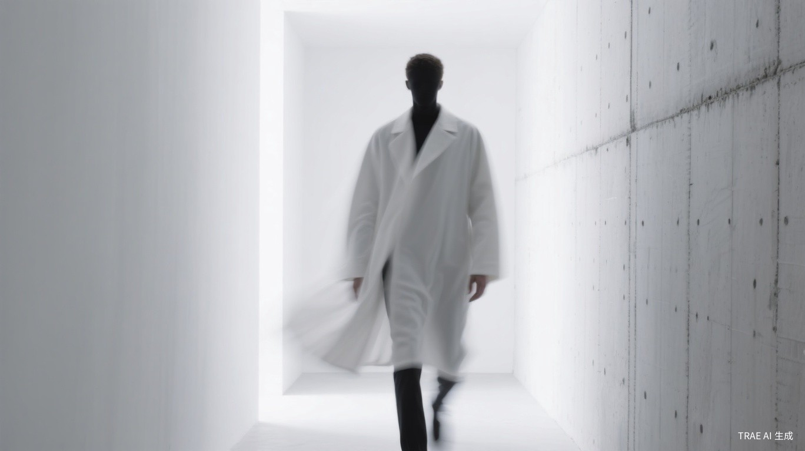
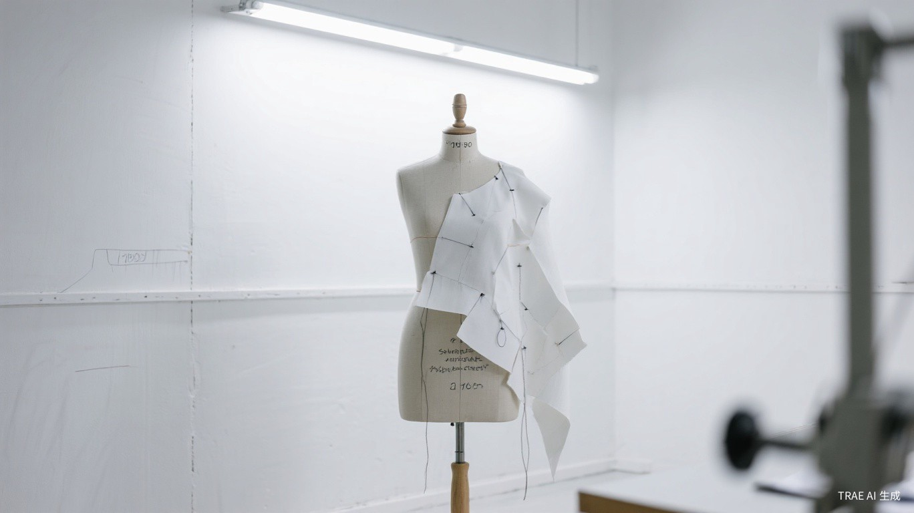
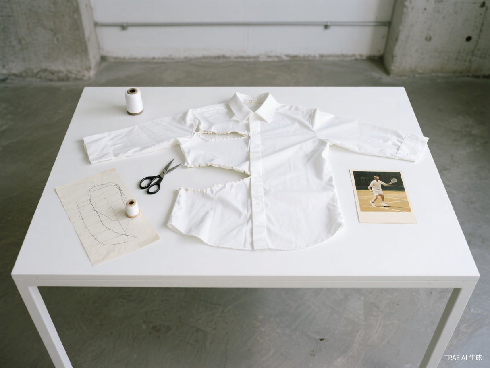

一件衣服。三种人生。
One Garment. Three Lives.
衣服被穿上之前，先被忘记。 Before clothes are worn, they are forgotten. — 不可见原则 / Principle of Invisibility
我们不为场景设计衣服。我们设计一种人——一种不再需要为场景换衣服的人。 We do not design clothes for occasions. We design a kind of person — one who no longer needs to change clothes for different occasions. — 创始理念 / Founding Principle

| Code / 编码 | Series / 系列 |
|---|---|
| 00 | Triple Stitch — 三场景融合系列 / Three-Setting Fusion |
| 01 | Office Core — 办公核心 / Office Core |
| 02 | Court Ready — 球场系列 / Court Ready |
| 03 | Social Hour — 社交系列 / Social Hour |
| 10 | Accessories — 配饰 / Accessories |
| 11 | Replica — 经典复刻 / Replica |
色彩 / Color
廓形 / Silhouette
面料 / Fabric
摄影 / Photography

| Item / 单品 | Setting / 场景 | Fabric / 面料 |
|---|---|---|
| The Transit Blazer 变形西装外套 / Transforming Blazer |
办公 / 社交 / 轻运动 Office / Social / Light Sport |
机械弹羊毛混纺，抗皱，四面弹 Mechanical-stretch wool blend, wrinkle-resistant, four-way stretch |
| The Court Shirt 球场衬衫 / Court Shirt |
办公 / 网球 / 社交 Office / Tennis / Social |
天丝莱赛尔混纺，吸湿排汗 Tencel lyocell blend, moisture-wicking |
| The Dual Trousers 双生裤 / Dual Trousers |
全场景 / All Settings | 咖啡渣再生纤维，防臭，速干 Coffee ground recycled fiber, odor-resistant, quick-dry |
| The Shift Polo 转场 Polo / Shift Polo |
办公 / 网球 / 健身 / 社交 Office / Tennis / Gym / Social |
海洋塑料再生尼龙，UPF 50+ Ocean plastic recycled nylon, UPF 50+ |
| The Afterhours Knit 午夜针织衫 / Afterhours Knit |
办公 / 社交 / 休闲运动 Office / Social / Casual Sport |
美利奴羊毛 + 天丝，调温 Merino wool + Tencel, temperature-regulating |
| Category / 品类 | Price / 价格区间 (RMB) |
|---|---|
| 核心单品 / Core Items | 1,200 - 2,800 |
| 运动融合单品 / Sport-Fusion Items | 600 - 1,200 |
| Replica 系列 / Replica Series | 1,500 - 3,500 |
| 配饰 / Accessories | 800 - 2,000 |
最终，Triple Stitch 希望成为一种生活方式的同义词——不是因为你穿了我们的衣服，而是因为你不再需要为衣服思考。 Ultimately, Triple Stitch hopes to become a synonym for a way of life — not because you wear our clothes, but because you no longer need to think about clothes. — 品牌愿景 / Brand Vision
—
One Garment.
Three Lives.